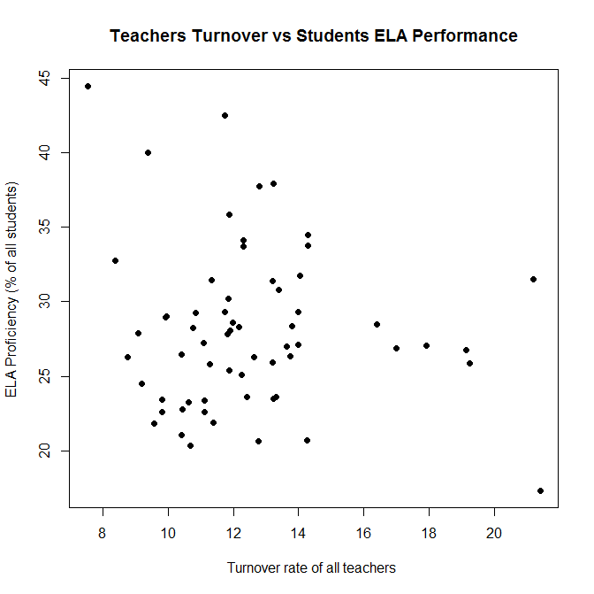
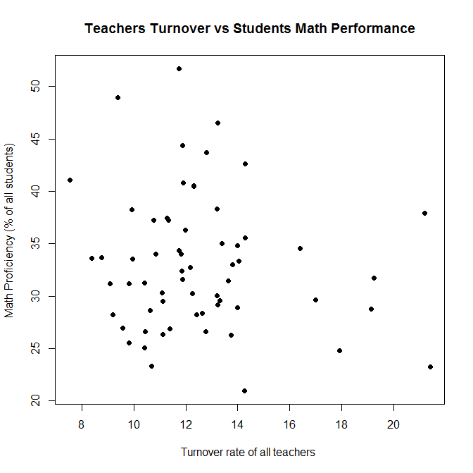

by Igor Balagula
Motivation
The purpose of this project is to see if teachers turnover has a significant impact on student performance. Intuitively we feel that when teachers leave school it may have a negative impact on students performance for a number of reasons:
- Overall morale may suffer
- Students need to adjust to a different style of teaching
On the other hand, if a less-effective teacher leaves school and is replaced with a more-effective teacher, this may result in improved performance of students.
Data
New York State Department of Education - 2013-2014 Report Card Database: Data Source Website
Methodology
Teachers turnover rate is defined in the Staff dataset for each school in NY State. As the first step I aggregated turnover rate by NY State County in order to rank counties according to teachers turnover rate.
In order to measure students ELA performance I used test results for 3-8 grade students for 2014 and aggregated proficiency level by County. Student is considered Proficient if he/she receives Level 3 or Level 4 scores on the ELA State test.
Likewise in order to measure students Math performance I used test results for 3-8 grade students for 2014 and aggregated proficiency level by County. Student is considered Proficient if he/she receives Level 3 or Level 4 scores on the Math State test.
Discussion
Scatter plots show that there is no significant correlation between teachers turnover and students performance in ELA and Math State tests. Calculated R-squared values (-0.003 for ELA and 0.001 for Math) also confirm absence of correlation. One of the possible explanations of this result is that less-effective teachers are more likely to leave their jobs and often replaced with more-effective teachers. As a result, increase in quality of teaching makes up for a negative effect of teachers turnover. The result can also be attributed to the fact that both Turnover and Performance data were aggregated for entire counties. More detail view (by district or school) may produce different results.
Limitations
This project is mainly an exercise in data visualizations and does not imply any statistical rigor. There are many factors that may impact results. Among them:
- School location (urban vs suburban)
- Socio-economic status of school population (high-poverty vs low-poverty schools)
- Different ways of aggregation of teachers turnover and students performance data

